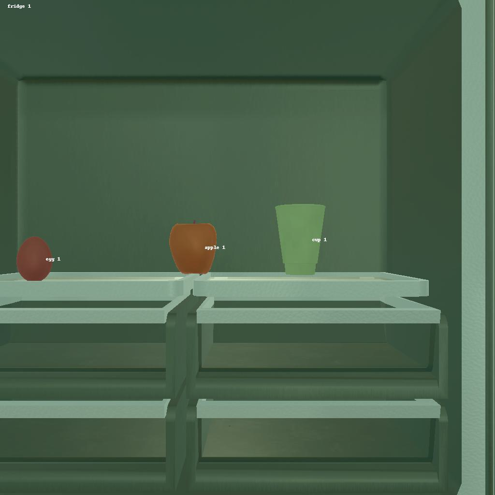
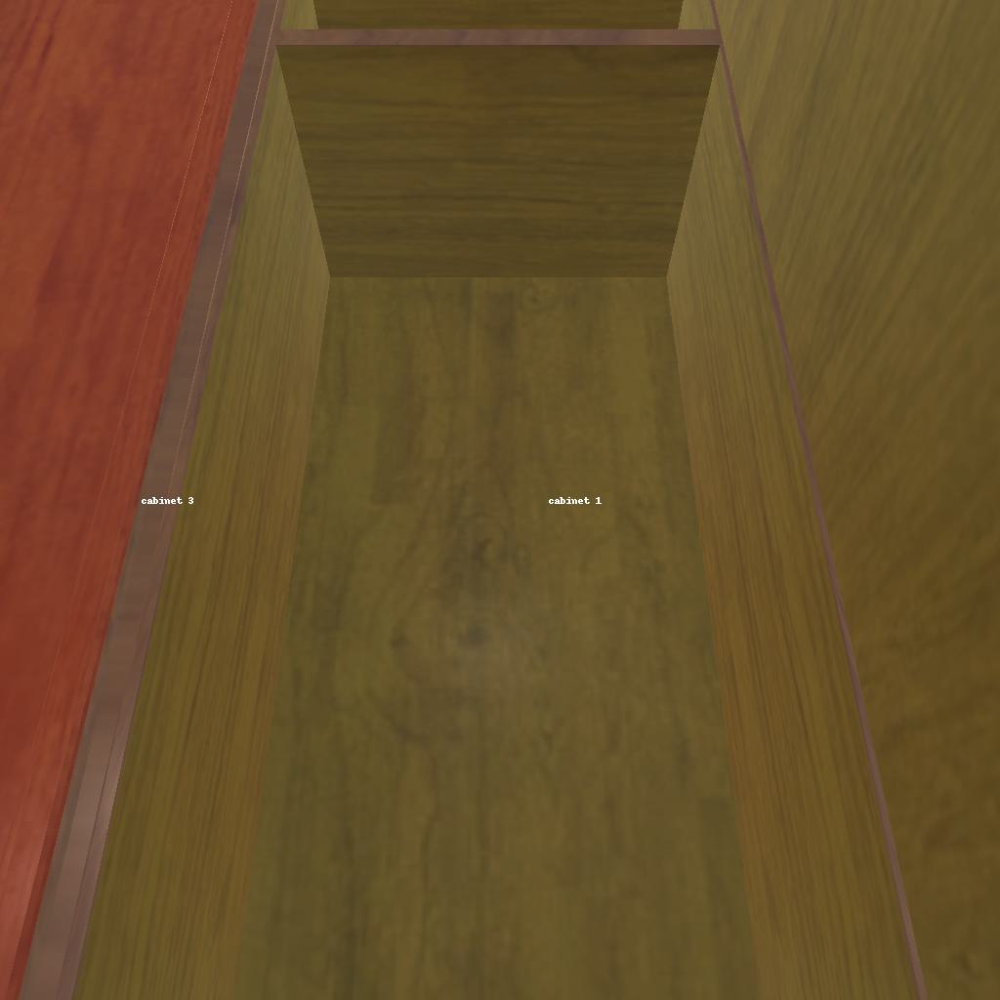

---------------------------------------------------------task: 24---------------------------------------------------------
--------------------------------------------------------------------------------------------------------------------------------------------------------------------
--------------------------------------------------------------------------------------------------------------------------------------------------------------------
Step:--------------------------------------------------------------------------17-------------------------------------------------------------------------------
----------------------------------------
VLM Prompt:
Image1:
Image2:
Image3:
**Instruction**
1. Analyze the provided image to identify all visible household objects, focusing on those relevant to the task description "put a hot tomato in fridge."
2. Use the analysis of the image and the task hint "The agent must find an object of the desired type, pick it up, go to a microwave, heat the object with the microwave, then find the correct location to place it, and put it down there. The agent does not need to use the microwave button or open the microwave to heat the object, and the agent just needs to do action that is "heat the object with the microwave"." to answer the question: what is the most reasonable action in the choices for the task description "put a hot tomato in fridge"?
4. Decide and write the answer using the template: The answer is: (i): , where i is the real number. If there is no desired object in the image, search every place based on **Initial Observation** to find the object. And if no one is exactly correct, choose a similar answer.
**Initial Observation**
You are in the middle of a room. Looking quickly around you, you can see cabinet (1-14), countertop (1-2), microwave (1), drawer (1-5), sink (1), sinkbasin (1), coffeemachine (1), stoveburner (1-4), toaster (1), fridge (1), diningtable (1), garbagecan (1), safe (1)
**Answer Choices**
(1): go to cabinet 2
(2): go to cabinet 3
(3): go to countertop 1
(4): go to cabinet 4
(5): go to cabinet 5
(6): go to microwave 1
(7): go to cabinet 6
(8): go to drawer 1
(9): go to drawer 2
(10): go to drawer 3
(11): go to cabinet 7
(12): go to cabinet 8
(13): go to sink 1
(14): go to sinkbasin 1
(15): go to coffeemachine 1
(16): go to cabinet 9
(17): go to cabinet 10
(18): go to drawer 4
(19): go to cabinet 11
(20): go to stoveburner 1
(21): go to stoveburner 2
(22): go to stoveburner 3
(23): go to stoveburner 4
(24): go to cabinet 12
(25): go to toaster 1
(26): go to drawer 5
(27): go to countertop 2
(28): go to fridge 1
(29): go to cabinet 13
(30): go to cabinet 14
(31): go to diningtable 1
(32): go to garbagecan 1
(33): go to safe 1
(34): open cabinet 1
(35): close cabinet 1
(36): take nothing from cabinet 1
(37): examine cabinet 1
**Answer**
Let's think step by step by following the instructions.
----------------------------------------
----------------------------------------
Original Response:
Firstly, we need to find a tomato, which is a type of food, so it's most likely to be found in a cabinet or a fridge. In Image 3, we can see that cabinet 1 and cabinet 8 are already open, but no tomato is visible inside them. According to the initial observation, there are multiple cabinets to check.
The next step would be to heat the tomato in the microwave. Since we do not have the tomato yet, we cannot proceed to this step.
After heating the tomato, we would need to put it in the fridge, which is visible in Image 2. However, since we do not have the tomato yet, we cannot proceed to this step either.
Given the task description and the initial observation, the most reasonable first action would be to search the cabinets that have not been checked yet. Starting with the cabinet closest to the numbers given in the initial observation, the answer is: (1): go to cabinet 2.
----------------------------------------
----------------------------------------
>>> Refine Original VLM Response and Get Pure Action: No action
----------------------------------------
-----------------------------------------------------------------
Running time: 9.39885663986206 seconds
Total Money: 15.812400000000007
-----------------------------------------------------------------
-----------------------------------------------------------------
Text Observation:Nothing happens.
-----------------------------------------------------------------
UNSUCCEED